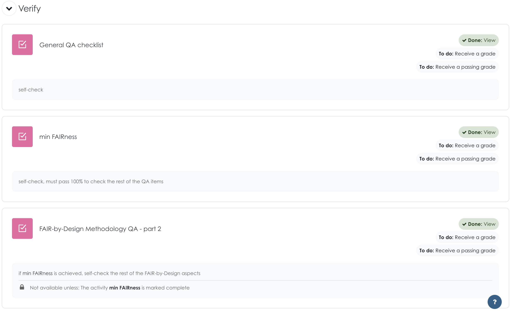

Quality Assurance and FAIR verification
When publishing is completed, the learning materials are made available for both the learners' and instructors' communities. The publishing process consists of many steps taking place on several different platforms and is therefore prone to errors. It is thus prudent to verify that all is as it should be afterwards including the FAIR aspects of the learning materials. In addition, this is the moment when external quality assurance (QA) should be engaged to assess the produced learning materials from both the learners' and instructors' perspective.
For these purposes you can use the QA guidelines and checklists developed by Skills4EOSC T2.4.
Learning Objectives
- Perform a QA review of the learning materials
- Rate FAIRness of learning materials
Target Audience
- attendees of the FAIR-by-Design ToT live webinar
Duration
40 mins
Prerequisites
Completed Stage 5 - Publish
Learning Tools
- Training BBB room
- Learning platform QA forms
- T2.4 QA checklists
Self-check QA
The publication process contains very important steps that aim to create FAIR learning materials accessible to both learners and instructors. Therefore, it is imperative that you first go through a self-check phase to ensure everything is as intended. For these purposes you can use the QA guidelines and checklists developed by T2.4.

Image by Shahid Abdullah from Pixabay
T2.4 have developed a number of QA checklists that should be used for this process, two of which are presented in this text. For the full list of checklists and their use please refer to D2.3. The two QA checklists that are listed here as part of the verification process are:
- the general QA checklist that focuses on the learning materials content and analyses it from a learners' perspective
- the FAIR-by-Design QA checklist that focuses on the FAIR aspects of the learning materials and requirements imposed with the use of the methodology
General QA
The general QA checklist developed by T2.4 addresses the main aspects of the developed learning materials that are related to their quality as perceived by the learners.
In the following table these aspects are related to the steps or fields from the FAIR-by-Design methodology to help you understand where, or at which point, this aspect is being addressed by the methodology.
| Checklist question | FAIR-by-Design element |
|---|---|
| Does the learning material title clearly describe what it offers? | syllabus (metadata) |
| Does the learning material include its goal? | syllabus (metadata) |
| Does the learning material clearly state its target audience? | syllabus (metadata) |
| Does the learning material state the level of expertise it is required from its audience? | syllabus (metadata) |
| Are the learning objectives/outcomes specific, well-defined, and measurable? | syllabus (metadata) |
| Does the learning material clearly describe its program / outline? | syllabus (metadata) |
| Does the learning material cover different learning styles? | learning content |
| Does the learning material states its delivery method? (live sessions, self-learning, hybrid, face-to-face...) | syllabus (metadata) |
| Does the learning material state the date when it was published and/or the date of the newest version? | syllabus (metadata) |
| If needed, does the learning material state the dates the training takes place? | syllabus |
| Does the learning material states the expected duration of the training? | syllabus |
| Does the learning material specify the developer/author of the learning material? | syllabus |
| Does the learning material specify the trainer/s of the learning material? | syllabus |
| If applicable, does the learning material explain the required tools/software/infrastructure as well as acceptable assignment submission types? | syllabus + learning unit |
| Does the learning material include any assignment? Are assessment strategies consistent with learning material objectives and are clearly stated? | activities |
| Is grading policy provided in a manner that clearly defines expectations for the learning material and respective assignments? | quiz strategy |
| Is the learning material comprised of micro-credentials that can be aligned to create a larger milestone credential? | certification information in syllabus and learning units |
| Does the learning material end with an activity that allows for feedback? | feedback form |
| Does the learning material include relevant keywords related to the content and structure? | syllabus (metadata) |
| Does the learning material include information regarding whether the access to it implies costs? | syllabus (metadata) |
| Does the learning material state the language used? | syllabus (metadata) |
FAIR-by-Design Methodology QA checklist
With the FAIR-by-Design methodology QA checklist you can check if you have followed the most important aspects of the methodology and managed to produce FAIR learning materials.
The questions marked as essential are related to the FAIR aspects of the obtained learning material. These elements must be present so that the learning materials are achieving bare minimum FAIRness.
As you manage to comply with the rest of the items you work on increasing the FAIRness and quality of the learning materials.
| Essential | Topic | Stage | FAIR aspect | Goal | CHECKLIST QUESTION |
|---|---|---|---|---|---|
| Instructional design process | Prepare | / | Learner-centric learning resources | Did you follow the stages of the backward instructional design process while developing the learning resource? | |
| YES | Schema | Prepare | Interoperable | Choose a metadata schema to describe the material, such as the RDA minimal metadata schema | Is the RDA minimal (or domain specific) metadata schema used for the learning material description? |
| Vocabularies | Prepare | Interoperable | Define controlled vocabularies for certain fields such as main keywords; learning objectives, audience, microcredentials.. using the controlled vocabularies related to the schema | Are controlled vocabularies (CVs) used for describing the resource characteristics aligned with the chosen metadata schema? | |
| YES | License | Design | Reusable | Reuse of licensed materials with attribution | If applicable, is there clear attribution for all reused resources with compatible licenses? |
| YES | License | Design | Reusable | permissable license allowing reuse and adaptations | Has the learning resource been made available for use by defining a permissable license or policy information that allows derivations? |
| Structure | Design | Reusable | Decide the level of aggregation on which FAIR will be implemented. The more granular the better reuse | Does the learning resource represent a complete learning object or aggregation consisting of content, tools and implementation resources defined around minimum one learning objective? | |
| Facilitator kit | Design | Reusable | Develop an instructor kit (how to, tips & tricks...) that should help facilitate the proces of others reusing the learning material | Does the resource incorporate an instructor kit that aids in facilitating the process of others reusing learning material by offering helpful how-to guides? | |
| YES | Tools & Formats | Produce | Interoperable | Use interoperable tools that will enable you to save the intermediate (editable) and final content in open file formats | Is your resource available in open file formats which are tool agnostic and compatible with a wide variety of existing software? |
| YES | Metadata | Produce | Findable | Describe the material (all FAIR objects) using the rules provided in the chosen schema | Is metadata for the resource provided in both human- and machine-readable format (e.g JSON, XMLor YAML? |
| YES | Accessibility | Produce | Accessible | Ensure accessibility of the material by people with different learning styles and/or with disabilities. | Has an accessibility checker tool been utilised to improve the accessibility of all learning resource files (PDF, HTML, video, etc.)? |
| Versioning | Publish | Reusable | Use a versioning system to implement document version control. New versions are released with a new DOI. | Have you employed a versioning system to track and control changes in your materials? | |
| YES | Repositories | Publish | Findable | Publish the new version of the learning materials & metadata | Is the complete learning resource (including instructors info) registered or indexed in at least one searchable repository? Is it in a FAIR repository? |
| Access rules | Publish | Accessible | Ensure all material is widely accessible by defining open access rules for learning and reuse | Are the resource access rules (how to access, e.g. registration procedure) explicitly communicated to learners? | |
| YES | Access rules | Publish | Accessible | Ensure all material is widely accessible by defining open access rules for learning and reuse | Are access rules (authentication & authorisation) implemented for the learning resource? |
| Catalogue | Publish | Findable | Improve findability by creating an entry in a selected training catalogue(s) (thematic, project, regional, general, etc.) | Is the learning resource searchable in at least one relevant catalogue? Is it FAIR (can be searched based on metadata)? | |
| Cocreation | Verify | Accessible | Enable the possibility to gather feedback and comments from users and peers | Does the course include the possibility to provide feedback or comments from users and-or trainers/designers? If so, do you regurarly gather and analyse that feedback? | |
| Cocreation | Verify | Reusable | community building | Does the resource adopt an open community approach regarding its quality and reachability? | |
| QA | Verify | / | external QA | Has the learning resource been checked by a third party regarding its learning experience quality? | |
| FAIR | FAIR | Results | Does the resource align with the FAIR-by-design methodology principles? |
Activity
Both the general and the FAIR-by-Design methodology QA checklists are made available as forms on the Skills4EOSC learning platform. Perform a QA self-check using the forms and analyse the obtained score.

Based on the results of the self-check QA analysis you should go back and make adjustments and re-publish again if necessary.
Don't forget that you should use all QA checklists provided by T2.4 when developing the Skills4EOSC training materials.
External QA
To truly view the produced learning materials through the lenses of learners and other instructors, you need to perform a QA check with the help of an external party. This external party should be someone who has not been involved in any step of the materials design, better yet has not seen the materials ever before. In this way, you will have a pair of fresh eyes that will review the learning materials without any cognitive bias.

Image by OpenClipart-Vectors from Pixabay
To further support this effort the chosen QA reviewer should be an expert that is very well versed in the requirements for engaging learning content and learning styles, as well as the FAIR principles. It is their job as an external QA reviewer to evaluate the learning materials performance, quality, and suggest improvements using an objective and independent perspective.
The external QA reviewer can use the T2.4 QA guidelines and checklists as a starting point for the QA, but should be encouraged to go more in-depth with the review process.
The high impact recommendations in the QA review report should be resolved as soon as possible. The lower level improvement recommendations can be taken into account as relevant input for the continuous improvement step.
Learning platform QA
In addition to the checklists the external QA reviewer should also ensure that the course on the Skill4EOSC learning platform is working properly.
For instructor-led trainings and courses this must be done before the scheduled training takes place. For these purposes the external QA reviewer should assume the role of a learner and try to:
- access the course information
- self-enrol in the course
- go through all of the resources available on the course
- including quizzes, feedback form and any other type of interaction
Any identified problems should be resolved as soon as possible.
Feedback-based QA

An integral part of the QA process is using the feedback form to evaluate the performance and identify areas of improvement for the developed learning materials. For these purposes the feedback gathered via the implemented feedback form should be regularly analysed and any comments and insights should be taken as input into the continuous improvement phase.
For these purposes you can use the Analysis button when clicking on the Feedback form on the Moodle course.

Summary
Performing a QA self-check after publication is an essential step that aims to ensure that all stages of the FAIR-by-Design methodology have been implemented successfully and the learning materials are accessible and presented as planned.
The QA guidelines and checklists developed by T2.4 can be extremely helpful when it comes to QA.
By engaging an external QA reviewer you are demonstrating your commitment to producing high-quality learning materials and provide accountability to your learners, the instructors community and the public in general.
The suggested improvements by the QA reviewers together with the analysed feedback results are the input that triggers the activation of the continuous improvement step that aims to develop a new higher-quality version of the learning materials.